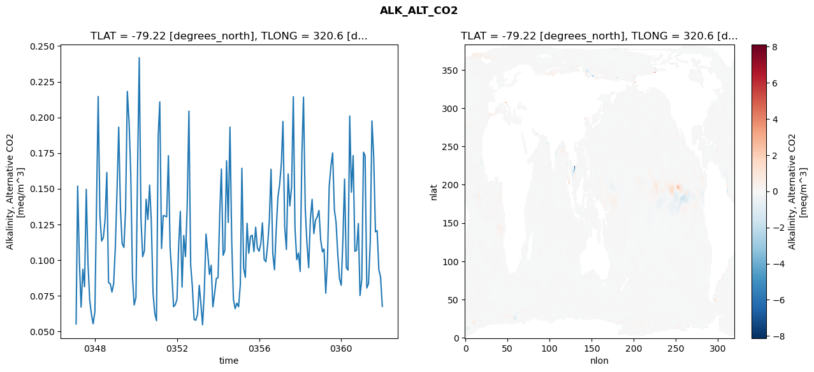
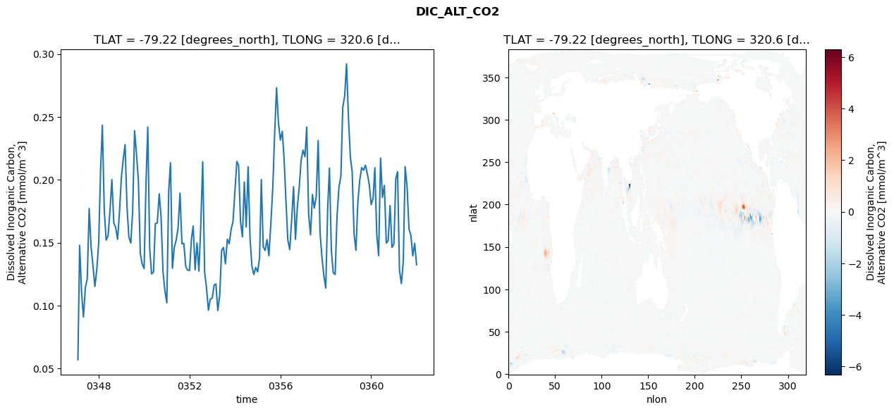
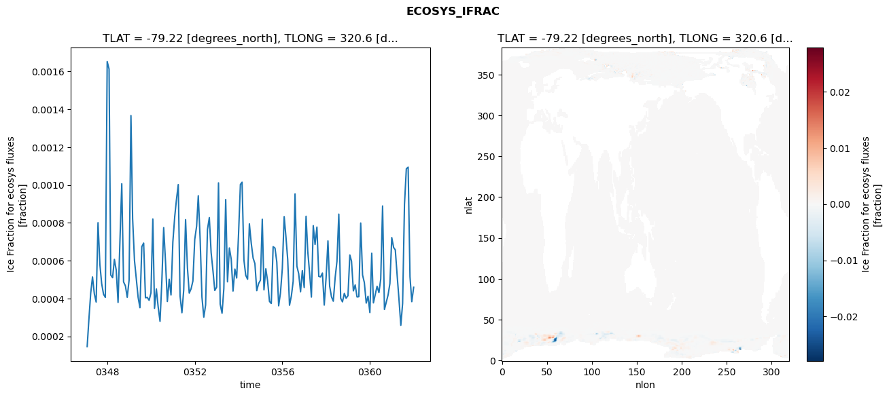
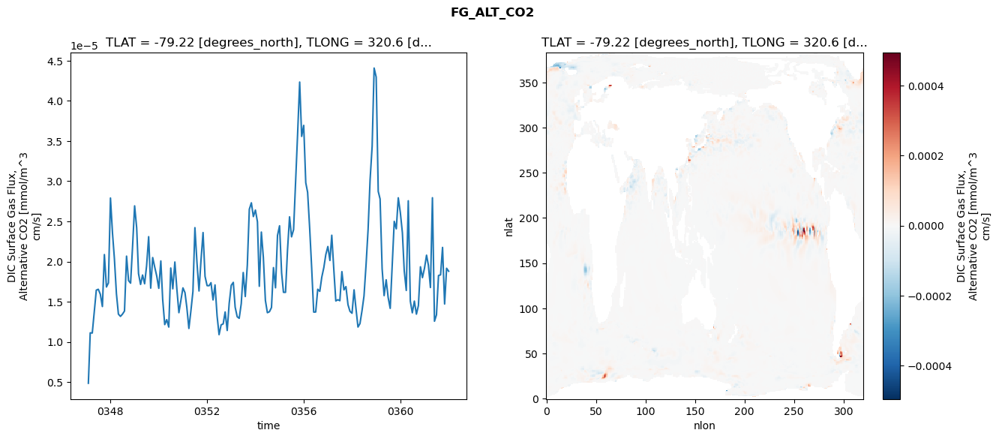

glb-dor_North_Atlantic_basin_028_1999-01-01_00112#
Simulation details#
Case: smyle.cdr-atlas-v0.glb-dor_North_Atlantic_basin_028_1999-01-01_00112.001
Basin: North_Atlantic_basin
Polygon: 28.0
Start date: 1999-01
Show code cell source Hide code cell source
import xarray as xr
import matplotlib.pyplot as plt
Show code cell source Hide code cell source
zarr_store = "/path/to/zarr/store"
# Parameters
zarr_store = "/global/cfs/projectdirs/m4746/Projects/Ocean-CDR-Atlas-v0/data/validation/smyle.cdr-atlas-v0.glb-dor_North_Atlantic_basin_028_1999-01-01_00112.001.validation.zarr"
Show code cell source Hide code cell source
%%time
ds_o = xr.open_zarr(zarr_store).compute()
ds_o
CPU times: user 582 ms, sys: 510 ms, total: 1.09 s
Wall time: 1.37 s
<xarray.Dataset> Size: 2MB
Dimensions: (nlat: 384, nlon: 320, time: 180)
Coordinates:
TLAT float64 8B -79.22
TLONG float64 8B 320.6
ULAT float64 8B -78.95
ULONG float64 8B 321.1
* time (time) object 1kB 0347-02-01 00:00:00 ... 0362-01-01 0...
z_t float32 4B 500.0
Dimensions without coordinates: nlat, nlon
Data variables:
ALK_ALT_CO2_diff (nlat, nlon) float32 492kB nan nan nan ... nan nan nan
ALK_ALT_CO2_rmse (time) float64 1kB 0.05512 0.1519 ... 0.08821 0.06747
DIC_ALT_CO2_diff (nlat, nlon) float32 492kB nan nan nan ... nan nan nan
DIC_ALT_CO2_rmse (time) float64 1kB 0.0571 0.148 0.1102 ... 0.1495 0.1325
ECOSYS_IFRAC_diff (nlat, nlon) float32 492kB nan nan nan ... nan nan nan
ECOSYS_IFRAC_rmse (time) float64 1kB 0.0001461 0.0002858 ... 0.0004594
FG_ALT_CO2_diff (nlat, nlon) float32 492kB nan nan nan ... nan nan nan
FG_ALT_CO2_rmse (time) float64 1kB 4.858e-06 1.113e-05 ... 1.88e-05xarray.Dataset
- nlat: 384
- nlon: 320
- time: 180
- TLAT()float64-79.22
- long_name :
- array of t-grid latitudes
- units :
- degrees_north
array(-79.22052261)
- TLONG()float64320.6
- long_name :
- array of t-grid longitudes
- units :
- degrees_east
array(320.56250892)
- ULAT()float64-78.95
- long_name :
- array of u-grid latitudes
- units :
- degrees_north
array(-78.95289509)
- ULONG()float64321.1
- long_name :
- array of u-grid longitudes
- units :
- degrees_east
array(321.12500894)
- time(time)object0347-02-01 00:00:00 ... 0362-01-...
- bounds :
- time_bound
- long_name :
- time
array([cftime.DatetimeNoLeap(347, 2, 1, 0, 0, 0, 0, has_year_zero=True), cftime.DatetimeNoLeap(347, 3, 1, 0, 0, 0, 0, has_year_zero=True), cftime.DatetimeNoLeap(347, 4, 1, 0, 0, 0, 0, has_year_zero=True), cftime.DatetimeNoLeap(347, 5, 1, 0, 0, 0, 0, has_year_zero=True), cftime.DatetimeNoLeap(347, 6, 1, 0, 0, 0, 0, has_year_zero=True), cftime.DatetimeNoLeap(347, 7, 1, 0, 0, 0, 0, has_year_zero=True), cftime.DatetimeNoLeap(347, 8, 1, 0, 0, 0, 0, has_year_zero=True), cftime.DatetimeNoLeap(347, 9, 1, 0, 0, 0, 0, has_year_zero=True), cftime.DatetimeNoLeap(347, 10, 1, 0, 0, 0, 0, has_year_zero=True), cftime.DatetimeNoLeap(347, 11, 1, 0, 0, 0, 0, has_year_zero=True), cftime.DatetimeNoLeap(347, 12, 1, 0, 0, 0, 0, has_year_zero=True), cftime.DatetimeNoLeap(348, 1, 1, 0, 0, 0, 0, has_year_zero=True), cftime.DatetimeNoLeap(348, 2, 1, 0, 0, 0, 0, has_year_zero=True), cftime.DatetimeNoLeap(348, 3, 1, 0, 0, 0, 0, has_year_zero=True), cftime.DatetimeNoLeap(348, 4, 1, 0, 0, 0, 0, has_year_zero=True), cftime.DatetimeNoLeap(348, 5, 1, 0, 0, 0, 0, has_year_zero=True), cftime.DatetimeNoLeap(348, 6, 1, 0, 0, 0, 0, has_year_zero=True), cftime.DatetimeNoLeap(348, 7, 1, 0, 0, 0, 0, has_year_zero=True), cftime.DatetimeNoLeap(348, 8, 1, 0, 0, 0, 0, has_year_zero=True), cftime.DatetimeNoLeap(348, 9, 1, 0, 0, 0, 0, has_year_zero=True), cftime.DatetimeNoLeap(348, 10, 1, 0, 0, 0, 0, has_year_zero=True), cftime.DatetimeNoLeap(348, 11, 1, 0, 0, 0, 0, has_year_zero=True), cftime.DatetimeNoLeap(348, 12, 1, 0, 0, 0, 0, has_year_zero=True), cftime.DatetimeNoLeap(349, 1, 1, 0, 0, 0, 0, has_year_zero=True), cftime.DatetimeNoLeap(349, 2, 1, 0, 0, 0, 0, has_year_zero=True), cftime.DatetimeNoLeap(349, 3, 1, 0, 0, 0, 0, has_year_zero=True), cftime.DatetimeNoLeap(349, 4, 1, 0, 0, 0, 0, has_year_zero=True), cftime.DatetimeNoLeap(349, 5, 1, 0, 0, 0, 0, has_year_zero=True), cftime.DatetimeNoLeap(349, 6, 1, 0, 0, 0, 0, has_year_zero=True), cftime.DatetimeNoLeap(349, 7, 1, 0, 0, 0, 0, has_year_zero=True), cftime.DatetimeNoLeap(349, 8, 1, 0, 0, 0, 0, has_year_zero=True), cftime.DatetimeNoLeap(349, 9, 1, 0, 0, 0, 0, has_year_zero=True), cftime.DatetimeNoLeap(349, 10, 1, 0, 0, 0, 0, has_year_zero=True), cftime.DatetimeNoLeap(349, 11, 1, 0, 0, 0, 0, has_year_zero=True), cftime.DatetimeNoLeap(349, 12, 1, 0, 0, 0, 0, has_year_zero=True), cftime.DatetimeNoLeap(350, 1, 1, 0, 0, 0, 0, has_year_zero=True), cftime.DatetimeNoLeap(350, 2, 1, 0, 0, 0, 0, has_year_zero=True), cftime.DatetimeNoLeap(350, 3, 1, 0, 0, 0, 0, has_year_zero=True), cftime.DatetimeNoLeap(350, 4, 1, 0, 0, 0, 0, has_year_zero=True), cftime.DatetimeNoLeap(350, 5, 1, 0, 0, 0, 0, has_year_zero=True), cftime.DatetimeNoLeap(350, 6, 1, 0, 0, 0, 0, has_year_zero=True), cftime.DatetimeNoLeap(350, 7, 1, 0, 0, 0, 0, has_year_zero=True), cftime.DatetimeNoLeap(350, 8, 1, 0, 0, 0, 0, has_year_zero=True), cftime.DatetimeNoLeap(350, 9, 1, 0, 0, 0, 0, has_year_zero=True), cftime.DatetimeNoLeap(350, 10, 1, 0, 0, 0, 0, has_year_zero=True), cftime.DatetimeNoLeap(350, 11, 1, 0, 0, 0, 0, has_year_zero=True), cftime.DatetimeNoLeap(350, 12, 1, 0, 0, 0, 0, has_year_zero=True), cftime.DatetimeNoLeap(351, 1, 1, 0, 0, 0, 0, has_year_zero=True), cftime.DatetimeNoLeap(351, 2, 1, 0, 0, 0, 0, has_year_zero=True), cftime.DatetimeNoLeap(351, 3, 1, 0, 0, 0, 0, has_year_zero=True), cftime.DatetimeNoLeap(351, 4, 1, 0, 0, 0, 0, has_year_zero=True), cftime.DatetimeNoLeap(351, 5, 1, 0, 0, 0, 0, has_year_zero=True), cftime.DatetimeNoLeap(351, 6, 1, 0, 0, 0, 0, has_year_zero=True), cftime.DatetimeNoLeap(351, 7, 1, 0, 0, 0, 0, has_year_zero=True), cftime.DatetimeNoLeap(351, 8, 1, 0, 0, 0, 0, has_year_zero=True), cftime.DatetimeNoLeap(351, 9, 1, 0, 0, 0, 0, has_year_zero=True), cftime.DatetimeNoLeap(351, 10, 1, 0, 0, 0, 0, has_year_zero=True), cftime.DatetimeNoLeap(351, 11, 1, 0, 0, 0, 0, has_year_zero=True), cftime.DatetimeNoLeap(351, 12, 1, 0, 0, 0, 0, has_year_zero=True), cftime.DatetimeNoLeap(352, 1, 1, 0, 0, 0, 0, has_year_zero=True), cftime.DatetimeNoLeap(352, 2, 1, 0, 0, 0, 0, has_year_zero=True), cftime.DatetimeNoLeap(352, 3, 1, 0, 0, 0, 0, has_year_zero=True), cftime.DatetimeNoLeap(352, 4, 1, 0, 0, 0, 0, has_year_zero=True), cftime.DatetimeNoLeap(352, 5, 1, 0, 0, 0, 0, has_year_zero=True), cftime.DatetimeNoLeap(352, 6, 1, 0, 0, 0, 0, has_year_zero=True), cftime.DatetimeNoLeap(352, 7, 1, 0, 0, 0, 0, has_year_zero=True), cftime.DatetimeNoLeap(352, 8, 1, 0, 0, 0, 0, has_year_zero=True), cftime.DatetimeNoLeap(352, 9, 1, 0, 0, 0, 0, has_year_zero=True), cftime.DatetimeNoLeap(352, 10, 1, 0, 0, 0, 0, has_year_zero=True), cftime.DatetimeNoLeap(352, 11, 1, 0, 0, 0, 0, has_year_zero=True), cftime.DatetimeNoLeap(352, 12, 1, 0, 0, 0, 0, has_year_zero=True), cftime.DatetimeNoLeap(353, 1, 1, 0, 0, 0, 0, has_year_zero=True), cftime.DatetimeNoLeap(353, 2, 1, 0, 0, 0, 0, has_year_zero=True), cftime.DatetimeNoLeap(353, 3, 1, 0, 0, 0, 0, has_year_zero=True), cftime.DatetimeNoLeap(353, 4, 1, 0, 0, 0, 0, has_year_zero=True), cftime.DatetimeNoLeap(353, 5, 1, 0, 0, 0, 0, has_year_zero=True), cftime.DatetimeNoLeap(353, 6, 1, 0, 0, 0, 0, has_year_zero=True), cftime.DatetimeNoLeap(353, 7, 1, 0, 0, 0, 0, has_year_zero=True), cftime.DatetimeNoLeap(353, 8, 1, 0, 0, 0, 0, has_year_zero=True), cftime.DatetimeNoLeap(353, 9, 1, 0, 0, 0, 0, has_year_zero=True), cftime.DatetimeNoLeap(353, 10, 1, 0, 0, 0, 0, has_year_zero=True), cftime.DatetimeNoLeap(353, 11, 1, 0, 0, 0, 0, has_year_zero=True), cftime.DatetimeNoLeap(353, 12, 1, 0, 0, 0, 0, has_year_zero=True), cftime.DatetimeNoLeap(354, 1, 1, 0, 0, 0, 0, has_year_zero=True), cftime.DatetimeNoLeap(354, 2, 1, 0, 0, 0, 0, has_year_zero=True), cftime.DatetimeNoLeap(354, 3, 1, 0, 0, 0, 0, has_year_zero=True), cftime.DatetimeNoLeap(354, 4, 1, 0, 0, 0, 0, has_year_zero=True), cftime.DatetimeNoLeap(354, 5, 1, 0, 0, 0, 0, has_year_zero=True), cftime.DatetimeNoLeap(354, 6, 1, 0, 0, 0, 0, has_year_zero=True), cftime.DatetimeNoLeap(354, 7, 1, 0, 0, 0, 0, has_year_zero=True), cftime.DatetimeNoLeap(354, 8, 1, 0, 0, 0, 0, has_year_zero=True), cftime.DatetimeNoLeap(354, 9, 1, 0, 0, 0, 0, has_year_zero=True), cftime.DatetimeNoLeap(354, 10, 1, 0, 0, 0, 0, has_year_zero=True), cftime.DatetimeNoLeap(354, 11, 1, 0, 0, 0, 0, has_year_zero=True), cftime.DatetimeNoLeap(354, 12, 1, 0, 0, 0, 0, has_year_zero=True), cftime.DatetimeNoLeap(355, 1, 1, 0, 0, 0, 0, has_year_zero=True), cftime.DatetimeNoLeap(355, 2, 1, 0, 0, 0, 0, has_year_zero=True), cftime.DatetimeNoLeap(355, 3, 1, 0, 0, 0, 0, has_year_zero=True), cftime.DatetimeNoLeap(355, 4, 1, 0, 0, 0, 0, has_year_zero=True), cftime.DatetimeNoLeap(355, 5, 1, 0, 0, 0, 0, has_year_zero=True), cftime.DatetimeNoLeap(355, 6, 1, 0, 0, 0, 0, has_year_zero=True), cftime.DatetimeNoLeap(355, 7, 1, 0, 0, 0, 0, has_year_zero=True), cftime.DatetimeNoLeap(355, 8, 1, 0, 0, 0, 0, has_year_zero=True), cftime.DatetimeNoLeap(355, 9, 1, 0, 0, 0, 0, has_year_zero=True), cftime.DatetimeNoLeap(355, 10, 1, 0, 0, 0, 0, has_year_zero=True), cftime.DatetimeNoLeap(355, 11, 1, 0, 0, 0, 0, has_year_zero=True), cftime.DatetimeNoLeap(355, 12, 1, 0, 0, 0, 0, has_year_zero=True), cftime.DatetimeNoLeap(356, 1, 1, 0, 0, 0, 0, has_year_zero=True), cftime.DatetimeNoLeap(356, 2, 1, 0, 0, 0, 0, has_year_zero=True), cftime.DatetimeNoLeap(356, 3, 1, 0, 0, 0, 0, has_year_zero=True), cftime.DatetimeNoLeap(356, 4, 1, 0, 0, 0, 0, has_year_zero=True), cftime.DatetimeNoLeap(356, 5, 1, 0, 0, 0, 0, has_year_zero=True), cftime.DatetimeNoLeap(356, 6, 1, 0, 0, 0, 0, has_year_zero=True), cftime.DatetimeNoLeap(356, 7, 1, 0, 0, 0, 0, has_year_zero=True), cftime.DatetimeNoLeap(356, 8, 1, 0, 0, 0, 0, has_year_zero=True), cftime.DatetimeNoLeap(356, 9, 1, 0, 0, 0, 0, has_year_zero=True), cftime.DatetimeNoLeap(356, 10, 1, 0, 0, 0, 0, has_year_zero=True), cftime.DatetimeNoLeap(356, 11, 1, 0, 0, 0, 0, has_year_zero=True), cftime.DatetimeNoLeap(356, 12, 1, 0, 0, 0, 0, has_year_zero=True), cftime.DatetimeNoLeap(357, 1, 1, 0, 0, 0, 0, has_year_zero=True), cftime.DatetimeNoLeap(357, 2, 1, 0, 0, 0, 0, has_year_zero=True), cftime.DatetimeNoLeap(357, 3, 1, 0, 0, 0, 0, has_year_zero=True), cftime.DatetimeNoLeap(357, 4, 1, 0, 0, 0, 0, has_year_zero=True), cftime.DatetimeNoLeap(357, 5, 1, 0, 0, 0, 0, has_year_zero=True), cftime.DatetimeNoLeap(357, 6, 1, 0, 0, 0, 0, has_year_zero=True), cftime.DatetimeNoLeap(357, 7, 1, 0, 0, 0, 0, has_year_zero=True), cftime.DatetimeNoLeap(357, 8, 1, 0, 0, 0, 0, has_year_zero=True), cftime.DatetimeNoLeap(357, 9, 1, 0, 0, 0, 0, has_year_zero=True), cftime.DatetimeNoLeap(357, 10, 1, 0, 0, 0, 0, has_year_zero=True), cftime.DatetimeNoLeap(357, 11, 1, 0, 0, 0, 0, has_year_zero=True), cftime.DatetimeNoLeap(357, 12, 1, 0, 0, 0, 0, has_year_zero=True), cftime.DatetimeNoLeap(358, 1, 1, 0, 0, 0, 0, has_year_zero=True), cftime.DatetimeNoLeap(358, 2, 1, 0, 0, 0, 0, has_year_zero=True), cftime.DatetimeNoLeap(358, 3, 1, 0, 0, 0, 0, has_year_zero=True), cftime.DatetimeNoLeap(358, 4, 1, 0, 0, 0, 0, has_year_zero=True), cftime.DatetimeNoLeap(358, 5, 1, 0, 0, 0, 0, has_year_zero=True), cftime.DatetimeNoLeap(358, 6, 1, 0, 0, 0, 0, has_year_zero=True), cftime.DatetimeNoLeap(358, 7, 1, 0, 0, 0, 0, has_year_zero=True), cftime.DatetimeNoLeap(358, 8, 1, 0, 0, 0, 0, has_year_zero=True), cftime.DatetimeNoLeap(358, 9, 1, 0, 0, 0, 0, has_year_zero=True), cftime.DatetimeNoLeap(358, 10, 1, 0, 0, 0, 0, has_year_zero=True), cftime.DatetimeNoLeap(358, 11, 1, 0, 0, 0, 0, has_year_zero=True), cftime.DatetimeNoLeap(358, 12, 1, 0, 0, 0, 0, has_year_zero=True), cftime.DatetimeNoLeap(359, 1, 1, 0, 0, 0, 0, has_year_zero=True), cftime.DatetimeNoLeap(359, 2, 1, 0, 0, 0, 0, has_year_zero=True), cftime.DatetimeNoLeap(359, 3, 1, 0, 0, 0, 0, has_year_zero=True), cftime.DatetimeNoLeap(359, 4, 1, 0, 0, 0, 0, has_year_zero=True), cftime.DatetimeNoLeap(359, 5, 1, 0, 0, 0, 0, has_year_zero=True), cftime.DatetimeNoLeap(359, 6, 1, 0, 0, 0, 0, has_year_zero=True), cftime.DatetimeNoLeap(359, 7, 1, 0, 0, 0, 0, has_year_zero=True), cftime.DatetimeNoLeap(359, 8, 1, 0, 0, 0, 0, has_year_zero=True), cftime.DatetimeNoLeap(359, 9, 1, 0, 0, 0, 0, has_year_zero=True), cftime.DatetimeNoLeap(359, 10, 1, 0, 0, 0, 0, has_year_zero=True), cftime.DatetimeNoLeap(359, 11, 1, 0, 0, 0, 0, has_year_zero=True), cftime.DatetimeNoLeap(359, 12, 1, 0, 0, 0, 0, has_year_zero=True), cftime.DatetimeNoLeap(360, 1, 1, 0, 0, 0, 0, has_year_zero=True), cftime.DatetimeNoLeap(360, 2, 1, 0, 0, 0, 0, has_year_zero=True), cftime.DatetimeNoLeap(360, 3, 1, 0, 0, 0, 0, has_year_zero=True), cftime.DatetimeNoLeap(360, 4, 1, 0, 0, 0, 0, has_year_zero=True), cftime.DatetimeNoLeap(360, 5, 1, 0, 0, 0, 0, has_year_zero=True), cftime.DatetimeNoLeap(360, 6, 1, 0, 0, 0, 0, has_year_zero=True), cftime.DatetimeNoLeap(360, 7, 1, 0, 0, 0, 0, has_year_zero=True), cftime.DatetimeNoLeap(360, 8, 1, 0, 0, 0, 0, has_year_zero=True), cftime.DatetimeNoLeap(360, 9, 1, 0, 0, 0, 0, has_year_zero=True), cftime.DatetimeNoLeap(360, 10, 1, 0, 0, 0, 0, has_year_zero=True), cftime.DatetimeNoLeap(360, 11, 1, 0, 0, 0, 0, has_year_zero=True), cftime.DatetimeNoLeap(360, 12, 1, 0, 0, 0, 0, has_year_zero=True), cftime.DatetimeNoLeap(361, 1, 1, 0, 0, 0, 0, has_year_zero=True), cftime.DatetimeNoLeap(361, 2, 1, 0, 0, 0, 0, has_year_zero=True), cftime.DatetimeNoLeap(361, 3, 1, 0, 0, 0, 0, has_year_zero=True), cftime.DatetimeNoLeap(361, 4, 1, 0, 0, 0, 0, has_year_zero=True), cftime.DatetimeNoLeap(361, 5, 1, 0, 0, 0, 0, has_year_zero=True), cftime.DatetimeNoLeap(361, 6, 1, 0, 0, 0, 0, has_year_zero=True), cftime.DatetimeNoLeap(361, 7, 1, 0, 0, 0, 0, has_year_zero=True), cftime.DatetimeNoLeap(361, 8, 1, 0, 0, 0, 0, has_year_zero=True), cftime.DatetimeNoLeap(361, 9, 1, 0, 0, 0, 0, has_year_zero=True), cftime.DatetimeNoLeap(361, 10, 1, 0, 0, 0, 0, has_year_zero=True), cftime.DatetimeNoLeap(361, 11, 1, 0, 0, 0, 0, has_year_zero=True), cftime.DatetimeNoLeap(361, 12, 1, 0, 0, 0, 0, has_year_zero=True), cftime.DatetimeNoLeap(362, 1, 1, 0, 0, 0, 0, has_year_zero=True)], dtype=object) - z_t()float32500.0
- long_name :
- depth from surface to midpoint of layer
- positive :
- down
- units :
- centimeters
- valid_max :
- 537500.0
- valid_min :
- 500.0
array(500., dtype=float32)
- ALK_ALT_CO2_diff(nlat, nlon)float32nan nan nan nan ... nan nan nan nan
- cell_methods :
- time: mean
- grid_loc :
- 3111
- long_name :
- Alkalinity, Alternative CO2
- units :
- meq/m^3
array([[ nan, nan, nan, ..., nan, nan, nan], [ nan, nan, nan, ..., nan, nan, nan], [0.08056641, 0.04931641, 0.04614258, ..., nan, nan, nan], ..., [ nan, nan, nan, ..., nan, nan, nan], [ nan, nan, nan, ..., nan, nan, nan], [ nan, nan, nan, ..., nan, nan, nan]], dtype=float32) - ALK_ALT_CO2_rmse(time)float640.05512 0.1519 ... 0.08821 0.06747
- cell_methods :
- time: mean
- grid_loc :
- 3111
- long_name :
- Alkalinity, Alternative CO2
- units :
- meq/m^3
array([0.05512119, 0.15185551, 0.09868345, 0.06699249, 0.09349862, 0.08120348, 0.149553 , 0.09733472, 0.07199567, 0.06182777, 0.05526396, 0.06357737, 0.14282516, 0.21465193, 0.13077723, 0.11327823, 0.11577082, 0.12807488, 0.16133919, 0.08410243, 0.08339189, 0.0775378 , 0.08344665, 0.11031015, 0.15177468, 0.19318161, 0.13551266, 0.11152629, 0.10876837, 0.13535856, 0.21823485, 0.19662467, 0.16035775, 0.08786407, 0.0684817 , 0.07366233, 0.16852691, 0.24186443, 0.12837328, 0.10230856, 0.1065145 , 0.14254427, 0.12839964, 0.15249493, 0.12714034, 0.07691322, 0.06286004, 0.05741682, 0.18694435, 0.21084113, 0.10806793, 0.13111391, 0.13084752, 0.13023835, 0.1731385 , 0.10810369, 0.09032177, 0.06725202, 0.06859543, 0.07235136, 0.11157812, 0.1340751 , 0.08093305, 0.11718786, 0.10236834, 0.13697982, 0.20442386, 0.09675935, 0.08122248, 0.05828432, 0.05770524, 0.06195735, 0.08222934, 0.0695706 , 0.05456583, 0.07707676, 0.11815299, 0.10508052, 0.08988073, 0.09631909, 0.06712291, 0.07653404, 0.08702958, 0.08761447, 0.13421267, 0.16377879, 0.10327669, 0.10653509, 0.16964172, 0.12630647, 0.19314378, 0.11355983, 0.07245412, 0.06587187, 0.06971344, 0.06716565, 0.08285763, 0.16431084, 0.09409445, 0.08779879, 0.12576751, 0.10473101, 0.11653292, 0.11738725, 0.10585087, 0.12298793, 0.1084527 , 0.10610174, 0.11176152, 0.12601523, 0.10044305, 0.09872388, 0.11027338, 0.12730049, 0.16360946, 0.10451919, 0.09313909, 0.12107201, 0.14394083, 0.15308761, 0.16789042, 0.19714499, 0.12339824, 0.10739651, 0.16031934, 0.13792107, 0.15071028, 0.21454171, 0.1221693 , 0.10019896, 0.10487493, 0.09195873, 0.17508894, 0.21425702, 0.1362316 , 0.11201418, 0.09459557, 0.12837097, 0.14251803, 0.11852729, 0.12793672, 0.13027589, 0.13473431, 0.11392108, 0.10573667, 0.10778454, 0.07669276, 0.09996503, 0.15142901, 0.16543146, 0.17507787, 0.13546494, 0.12632875, 0.10362562, 0.08690844, 0.08228806, 0.11592198, 0.15676187, 0.09475533, 0.09286518, 0.20100314, 0.14753545, 0.17318847, 0.10601589, 0.10686213, 0.12560264, 0.07504521, 0.08615762, 0.17556403, 0.1731469 , 0.0803707 , 0.08338326, 0.11268437, 0.19755392, 0.17298756, 0.11976555, 0.12059062, 0.09315817, 0.0882108 , 0.06746799]) - DIC_ALT_CO2_diff(nlat, nlon)float32nan nan nan nan ... nan nan nan nan
- cell_methods :
- time: mean
- grid_loc :
- 3111
- long_name :
- Dissolved Inorganic Carbon, Alternative CO2
- units :
- mmol/m^3
array([[ nan, nan, nan, ..., nan, nan, nan], [ nan, nan, nan, ..., nan, nan, nan], [0.0871582 , 0.05371094, 0.05737305, ..., nan, nan, nan], ..., [ nan, nan, nan, ..., nan, nan, nan], [ nan, nan, nan, ..., nan, nan, nan], [ nan, nan, nan, ..., nan, nan, nan]], dtype=float32) - DIC_ALT_CO2_rmse(time)float640.0571 0.148 ... 0.1495 0.1325
- cell_methods :
- time: mean
- grid_loc :
- 3111
- long_name :
- Dissolved Inorganic Carbon, Alternative CO2
- units :
- mmol/m^3
array([0.05709988, 0.14796961, 0.11015201, 0.09103806, 0.11453761, 0.12130692, 0.17711291, 0.14677842, 0.1319624 , 0.11527632, 0.12836399, 0.14986664, 0.20840259, 0.24332633, 0.17544873, 0.152109 , 0.15542614, 0.1752286 , 0.20014963, 0.16573855, 0.16210571, 0.15274587, 0.17402227, 0.20206981, 0.21696792, 0.22791943, 0.17872613, 0.15449952, 0.14975103, 0.17519116, 0.23901814, 0.22019502, 0.19935659, 0.14151422, 0.13304398, 0.12951297, 0.19806062, 0.24195644, 0.14549721, 0.12526507, 0.12669515, 0.16524157, 0.1657678 , 0.18882483, 0.17044225, 0.12647577, 0.11232235, 0.10226425, 0.19163459, 0.21352838, 0.12972545, 0.14620471, 0.15218899, 0.16164059, 0.18942212, 0.14915193, 0.14951265, 0.13124461, 0.12824254, 0.12795463, 0.15302567, 0.16328091, 0.12838965, 0.1498331 , 0.12745211, 0.16355806, 0.2142837 , 0.12660882, 0.11411867, 0.0964023 , 0.10519555, 0.10604671, 0.11644537, 0.11725364, 0.09613316, 0.10784844, 0.14384745, 0.14628188, 0.1332246 , 0.1528544 , 0.14925941, 0.16069758, 0.16672742, 0.191385 , 0.21462247, 0.21144917, 0.16670917, 0.15472696, 0.19819968, 0.1625519 , 0.21032346, 0.1533524 , 0.13150597, 0.12476496, 0.13034933, 0.12686656, 0.13806089, 0.20018138, 0.1467976 , 0.14383886, 0.15250908, 0.13968045, 0.16513168, 0.1932737 , 0.23611579, 0.27310389, 0.24587807, 0.231612 , 0.23848435, 0.21800796, 0.18331596, 0.15221005, 0.1446166 , 0.16747034, 0.19448255, 0.15270962, 0.17820731, 0.19438689, 0.2156362 , 0.22356728, 0.21833129, 0.24192146, 0.17233671, 0.15628339, 0.18833658, 0.1775654 , 0.18673023, 0.23116611, 0.15830657, 0.13812572, 0.12410159, 0.11397761, 0.17770839, 0.20935988, 0.14370439, 0.12615482, 0.12480351, 0.17120646, 0.19410357, 0.20270938, 0.25739239, 0.26663577, 0.29208183, 0.24903679, 0.21743726, 0.20678187, 0.15682934, 0.14397921, 0.18220572, 0.19972945, 0.20964712, 0.20765321, 0.21164328, 0.204506 , 0.19625945, 0.18020568, 0.1854363 , 0.20963739, 0.15648132, 0.13970979, 0.21726199, 0.18604352, 0.19557042, 0.14976317, 0.1516272 , 0.17950496, 0.14626105, 0.14895406, 0.20097011, 0.20639705, 0.12824888, 0.11759736, 0.1347127 , 0.21042248, 0.19452304, 0.16091089, 0.15598447, 0.13960302, 0.1494888 , 0.13253878]) - ECOSYS_IFRAC_diff(nlat, nlon)float32nan nan nan nan ... nan nan nan nan
- cell_methods :
- time: mean
- grid_loc :
- 2110
- long_name :
- Ice Fraction for ecosys fluxes
- units :
- fraction
array([[ nan, nan, nan, ..., nan, nan, nan], [ nan, nan, nan, ..., nan, nan, nan], [-1.7166138e-04, -6.2167645e-05, -8.8691711e-05, ..., nan, nan, nan], ..., [ nan, nan, nan, ..., nan, nan, nan], [ nan, nan, nan, ..., nan, nan, nan], [ nan, nan, nan, ..., nan, nan, nan]], dtype=float32) - ECOSYS_IFRAC_rmse(time)float640.0001461 0.0002858 ... 0.0004594
- cell_methods :
- time: mean
- grid_loc :
- 2110
- long_name :
- Ice Fraction for ecosys fluxes
- units :
- fraction
array([0.00014606, 0.00028581, 0.00042809, 0.00051396, 0.00042389, 0.00038157, 0.0008006 , 0.00058053, 0.00047841, 0.0004224 , 0.00040596, 0.00165181, 0.00161263, 0.0005246 , 0.00050995, 0.00060679, 0.00054902, 0.0003794 , 0.00069972, 0.00100647, 0.00048771, 0.00046659, 0.00040665, 0.00049697, 0.00136664, 0.00082216, 0.00060103, 0.00050355, 0.00040593, 0.00035153, 0.00067399, 0.00069295, 0.00040405, 0.00040589, 0.00039046, 0.00043001, 0.00082014, 0.00034818, 0.00045063, 0.00035554, 0.00027961, 0.00048874, 0.00077456, 0.00059131, 0.0003843 , 0.0005018 , 0.00041863, 0.000699 , 0.00083202, 0.00092004, 0.00100194, 0.00041283, 0.000325 , 0.00044546, 0.00081667, 0.0005622 , 0.00042867, 0.00045148, 0.00049257, 0.00071251, 0.00078236, 0.00094301, 0.00071295, 0.00040769, 0.00030137, 0.00036605, 0.00076499, 0.00082745, 0.00064261, 0.0005456 , 0.00044237, 0.00046034, 0.00101096, 0.00037034, 0.00032237, 0.00045209, 0.00092301, 0.00048822, 0.00066713, 0.00060794, 0.00043943, 0.00055566, 0.0005084 , 0.00073828, 0.00100254, 0.00101472, 0.00060365, 0.00052255, 0.00050181, 0.00079458, 0.00069202, 0.00061377, 0.00058443, 0.00044148, 0.00047879, 0.00049664, 0.00081888, 0.0004459 , 0.00055723, 0.00049173, 0.00038475, 0.00037386, 0.00067394, 0.0006664 , 0.00059287, 0.00036147, 0.00042913, 0.00055824, 0.00083276, 0.0007315 , 0.00060574, 0.00036438, 0.00041343, 0.00049096, 0.00095244, 0.00057076, 0.00053152, 0.00043555, 0.00054745, 0.00045822, 0.00083452, 0.00065063, 0.00053464, 0.00040778, 0.00078507, 0.00068564, 0.00077748, 0.00051718, 0.00051415, 0.00053468, 0.00036535, 0.00051053, 0.00070442, 0.00046599, 0.00040851, 0.00038592, 0.00051017, 0.00059646, 0.0008458 , 0.00040128, 0.00038245, 0.00042683, 0.00040137, 0.00041527, 0.00062985, 0.00059736, 0.00044029, 0.0004718 , 0.00040828, 0.0004095 , 0.00079882, 0.0005242 , 0.00048408, 0.00037579, 0.00041203, 0.0003259 , 0.00063912, 0.00037702, 0.000421 , 0.00046481, 0.00043117, 0.00050279, 0.00088898, 0.00034209, 0.00038048, 0.00041945, 0.00047935, 0.00072181, 0.0006696 , 0.00065697, 0.00052144, 0.00039718, 0.00025854, 0.00037395, 0.00089675, 0.00108541, 0.00109401, 0.00051523, 0.00038338, 0.00045942]) - FG_ALT_CO2_diff(nlat, nlon)float32nan nan nan nan ... nan nan nan nan
- cell_methods :
- time: mean
- grid_loc :
- 2110
- long_name :
- DIC Surface Gas Flux, Alternative CO2
- units :
- mmol/m^3 cm/s
array([[ nan, nan, nan, ..., nan, nan, nan], [ nan, nan, nan, ..., nan, nan, nan], [6.152959e-08, 9.682594e-08, 6.759319e-08, ..., nan, nan, nan], ..., [ nan, nan, nan, ..., nan, nan, nan], [ nan, nan, nan, ..., nan, nan, nan], [ nan, nan, nan, ..., nan, nan, nan]], dtype=float32) - FG_ALT_CO2_rmse(time)float644.858e-06 1.113e-05 ... 1.88e-05
- cell_methods :
- time: mean
- grid_loc :
- 2110
- long_name :
- DIC Surface Gas Flux, Alternative CO2
- units :
- mmol/m^3 cm/s
array([4.85773113e-06, 1.11336190e-05, 1.11064964e-05, 1.37497774e-05, 1.64425499e-05, 1.65511818e-05, 1.59302586e-05, 1.44062276e-05, 2.08680395e-05, 1.68342288e-05, 1.73388801e-05, 2.79042697e-05, 2.34830616e-05, 2.04135408e-05, 1.60005173e-05, 1.34629640e-05, 1.31782045e-05, 1.34551751e-05, 1.38433097e-05, 2.06718726e-05, 1.76364970e-05, 1.73107380e-05, 2.18923691e-05, 2.69282345e-05, 2.41995746e-05, 1.84955078e-05, 1.71517358e-05, 1.83262150e-05, 1.72352311e-05, 1.94778669e-05, 2.30937149e-05, 1.66926808e-05, 2.04952331e-05, 1.92991132e-05, 1.82029511e-05, 1.66700374e-05, 2.00741137e-05, 1.52794779e-05, 1.21562561e-05, 1.27718141e-05, 1.18512156e-05, 1.91961161e-05, 1.66098182e-05, 1.99420137e-05, 1.65988493e-05, 1.36405066e-05, 1.51658103e-05, 1.67244503e-05, 1.61261407e-05, 1.42871309e-05, 1.16785255e-05, 1.38407342e-05, 1.62716913e-05, 2.42145914e-05, 1.98738739e-05, 1.63389532e-05, 2.01596526e-05, 2.36069447e-05, 1.81573147e-05, 1.70032013e-05, 1.69984249e-05, 1.73728316e-05, 1.52265090e-05, 1.70936645e-05, 1.32445224e-05, 1.09083529e-05, 1.21246461e-05, 1.22426720e-05, 1.37275548e-05, 1.14244303e-05, 1.48019153e-05, 1.70420430e-05, 1.74100854e-05, 1.43262013e-05, 1.31354965e-05, 1.29376509e-05, 1.47530633e-05, 1.86335241e-05, 1.56507923e-05, 1.95597921e-05, ... 2.55628613e-05, 2.30747676e-05, 2.39721077e-05, 3.00586560e-05, 3.59116321e-05, 4.23331131e-05, 3.55740126e-05, 3.69425379e-05, 2.98073117e-05, 2.86189647e-05, 2.41586124e-05, 1.92559661e-05, 1.37107298e-05, 1.37227362e-05, 1.65535305e-05, 1.62944552e-05, 1.80568270e-05, 1.92532191e-05, 2.08722585e-05, 2.18716917e-05, 2.01351723e-05, 2.32725498e-05, 1.89866372e-05, 1.51021420e-05, 1.52515549e-05, 1.51288935e-05, 1.87428242e-05, 1.64741620e-05, 1.68847426e-05, 1.46340927e-05, 1.38078097e-05, 1.35687861e-05, 1.64776661e-05, 1.42018695e-05, 1.18516102e-05, 1.22800287e-05, 1.38883127e-05, 1.57145328e-05, 1.95852249e-05, 2.40218868e-05, 3.01768763e-05, 3.43327132e-05, 4.40711120e-05, 4.29547515e-05, 2.87279995e-05, 2.77906257e-05, 1.90961260e-05, 1.57629601e-05, 1.77285363e-05, 1.55260560e-05, 1.41760548e-05, 1.96142605e-05, 2.49959785e-05, 2.40748771e-05, 2.79306742e-05, 2.60887552e-05, 2.35935519e-05, 1.88538980e-05, 1.64071244e-05, 2.75592954e-05, 1.50742638e-05, 1.36217749e-05, 1.50782463e-05, 1.34541141e-05, 1.45163223e-05, 1.93481893e-05, 1.79963998e-05, 1.91702447e-05, 2.07937157e-05, 1.95516262e-05, 1.67697748e-05, 2.79387162e-05, 1.25770123e-05, 1.33628882e-05, 1.82637822e-05, 1.83454196e-05, 2.17583291e-05, 1.47211370e-05, 1.91650304e-05, 1.87950135e-05])
- timePandasIndex
PandasIndex(CFTimeIndex([0347-02-01 00:00:00, 0347-03-01 00:00:00, 0347-04-01 00:00:00, 0347-05-01 00:00:00, 0347-06-01 00:00:00, 0347-07-01 00:00:00, 0347-08-01 00:00:00, 0347-09-01 00:00:00, 0347-10-01 00:00:00, 0347-11-01 00:00:00, ... 0361-04-01 00:00:00, 0361-05-01 00:00:00, 0361-06-01 00:00:00, 0361-07-01 00:00:00, 0361-08-01 00:00:00, 0361-09-01 00:00:00, 0361-10-01 00:00:00, 0361-11-01 00:00:00, 0361-12-01 00:00:00, 0362-01-01 00:00:00], dtype='object', length=180, calendar='noleap', freq='MS'))
Show code cell source Hide code cell source
variables = [v[:-5] for v in ds_o.variables if "_rmse" in v]
Show code cell source Hide code cell source
plt.rcParams.update({'figure.max_open_warning': 0})
for v in variables:
fig, axs = plt.subplots(1, 2, figsize=(15, 6))
ds_o[f"{v}_rmse"].plot(ax=axs[0])
ds_o[f"{v}_diff"].plot(ax=axs[1])
plt.suptitle(v, fontweight="bold")



